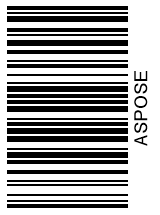
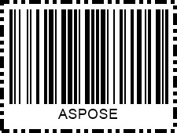
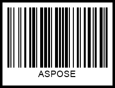

Customize Barcode Appearance
In the present article, you can find details about customizing various parameters of barcodes to be generated, such as barcode label size, rotation angle, barcode paddings, and barcode image borders.
Overview
Aspose.BarCode for Cloud provides class BarcodeGenerator to generate barcodes in line with the predefined settings so that each element of a barcode image gets its fixed position relative to other elements, as shown in the scheme below. A barcode label comprises the following parts: barcode text, bars, top and bottom captions, image borders, and paddings. All elements besides barcode bars are optional.

Barcode Image Sizing Modes
In general, Aspose.BarCode for Cloud defines barcode image size in terms of height and width automatically. The library enables developers to manage image size settings manually by determining the height and width of barcode labels through setImageHeight(Unit value) and setImageWidth(Unit value) methods of class BaseGenerationParameters.
Barcode image size can be varied by using various sizing modes that can be enabled using the AutoSizeMode enum of class BaseGenerationParameters. AutoSizeMode provides the following options: None, Nearest, and Interpolation. In Interpolation and Nearest modes, barcode image size is managed based on the values of width and height, and other parameters are ignored. In turn, when the None mode is enabled, barcode image size is defined ignoring width and height; instead, other parameters, such as XDimension, are used. AutoSizeMode takes the None value by default.
Further in the article, different barcode sizing modes are discussed.
AutoSizeMode.None
Setting the None mode implies that barcode image size is managed based on different parameters ignoring width and height. To specify barcode size, class BarcodeParameters provides a special method called setXDimension. It is used to define the minimum size of bars in 1D barcodes or cells in 2D barcodes. Other barcode sizing parameters are calculated based on the XDimension value.
Various barcode standards often determine XDimension to provide compatibility between printing and scanning equipment units so that barcode images could be captured by scanners used in various companies. XDimension is related to the data density of a barcode type, meaning that it determines the amount of data that can be encoded in one barcode. Setting a small value of XDimension results in covering less space to place each encoded character in a barcode image. In contrast, setting a bigger value of XDimension leads to enlarging the area required to encode each character and decreasing the number of characters per inch.
The barcode label shown below has been generated using the None mode.

AutoSizeMode.Interpolation
Setting AutoSizeMode.INTERPOLATION means that only the values specified using setImageHeight and setImageWidth methods are used in barcode sizing. In this case, barcode image size is determined using the manually specified values of height and width even when it results in producing distorted barcode proportions and the deterioration of barcode readability. The Interpolation mode is appropriate to create barcode images with a resolution of 300 dpi or higher. Such resolution settings will allow keeping barcode distortions negligible and avoiding the deterioration of barcode readability.
The barcode label generated through the Interpolation mode is demonstrated below.

AutoSizeMode.Nearest
To set barcode image size, the Nearest mode uses only the values specified using setImageHeight and setImageWidth methods similarly to the Interpolation mode. In this mode, BarcodeGenerator aims at finding the most suitable image size to avoid barcode proportion distortion and readability deterioration.
The barcode label created through the Nearest mode is provided below.

Barcode Rotation
In Aspose.BarCode for Cloud, barcode image rotation can be set through the setRotationAngle method of class BaseGenerationParameters. Passing a value in degrees to this method allows generating a barcode image rotated at the desired angle clockwise or counterclockwise.
The sample barcode labels rotated by various angles are shown below.
| Rotation Angle | Is Set to +90° | Is Set to -90° | Is Set to +45° | Is Set to -45° | Is Set to 180° |
|---|---|---|---|---|---|
 |
 |  |
 |
 |
Customizing Barcode Borders and Padding
Aspose.BarCode for Cloud allows customizing barcode image borders and paddings. Corresponding methods are described further.
Border Settings
Applying default border settings results in generating barcode images without borders. Alternatively, they can be defined manually using five styles: solid, dotted, dashed, dash-dot, and dash-dot-dot. The border style can be modified using class BorderParameters. In addition, this class allows setting border thickness in any available units and colors through setWidth and setColor methods. Border styles can be changed using the setDashStyle method of the same class.
Barcode labels demonstrated below have been generated using different border styles.
| Border Style | Solid | Dashed | Dotted | Dash-Dot | Dash-Dot-Dot |
|---|---|---|---|---|---|
 |
 |
 |
 |
 |
Paddings
Paddings from the edges of a barcode image or its borders can be set in four directions using a special class called Aspose.BarCode.Generation.Padding and its methods: setLeft, setRight, setTop, and setBottom. By default, padding values are 5 points in all directions.
| Padding | Millimeters | Pixels |
|---|---|---|
 |
 |
Bar Width Reduction
The other important property that needs to be determined accurately is bar width. Setting an appropriate value of this parameter is critical to assure successful barcode scanning. Due to the so-called ink floating phenomenon, some barcode printing techniques may result in increasing actual bar width after printing out barcode images. This happens often in commercial printing in cases when conventional printing presses are used. To ensure that printed barcode images will be printed out with appropriate bar width, setting a bar width reduction value may be required.
Bar width reduction (BWR) is a way to mitigate the effect of ink floating in a graphic design file of a barcode. Aspose.BarCode for Cloud allows modifying bar width through the setBarWidthReduction method of class BarcodeParameters. Passing the required value while calling this method allows decreasing bar width in 1D barcodes or cell size in 2D barcodes. To find out the suitable BWR value for a printer, it is necessary to check special tables provided by printer manufacturers. Modifying this parameter is not applicable to laser printers.
The sample barcodes shown below have been generated with and without applying bar width reduction.
| Barcode Type | Bar Width Reduction 0 | Bar Width Reduction 3 |
|---|---|---|
| Code 128 |  |
 |
| Data Matrix |  |
 |